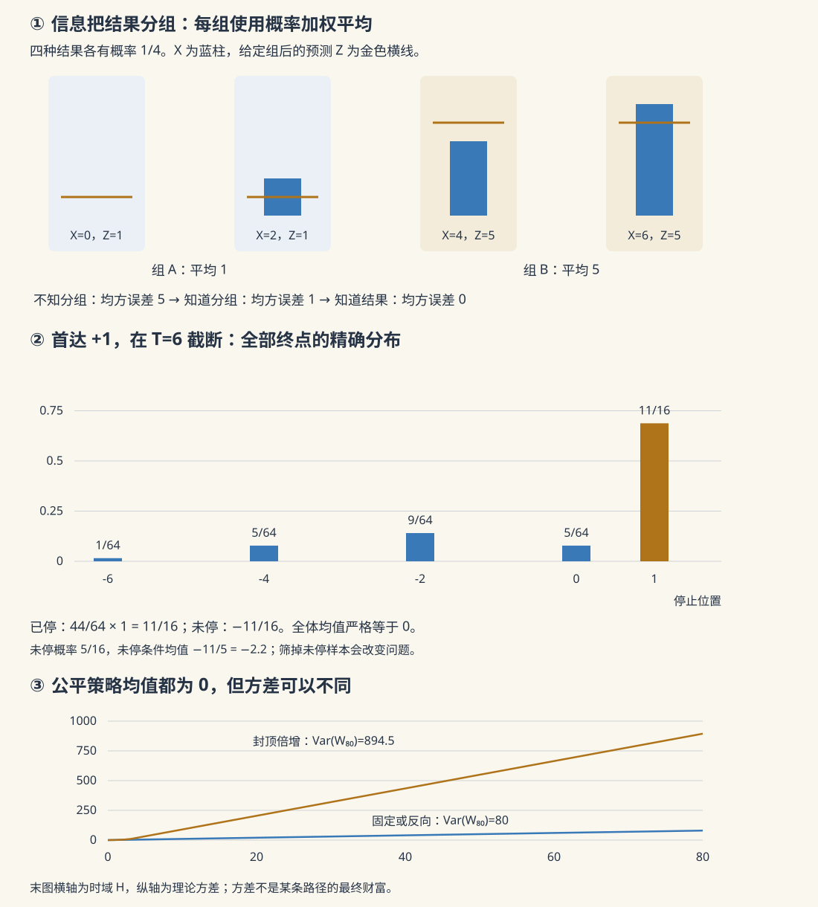

本页目录
测度概率 III · 条件期望与鞅
对标：Durrett Probability: Theory and Examples §4.1–4.2、§4.8。前置：测度期望、独立性与大数律、Hilbert 空间与投影。 从“知道全部结果时怎么取平均”，走到“只知道一部分信息时怎么预测”。再看这个预测随时间更新，为什么成为鞅；最后检验停止规则究竟允许我们保留哪一本期望账。
1. 先用四个结果算一次“给定信息”
设四个结果 \(\omega_1,\dots,\omega_4\) 各有概率 \(1/4\)，目标变量依次为
完全不知道结果时，预测为 \(EX=3\)。现在仪器只告诉你属于前两种结果还是后两种结果。这份信息对应分组 \(\{\omega_1,\omega_2\}\)、\(\{\omega_3,\omega_4\}\)，以及由两组生成的 \(\sigma\)-代数 \(\mathcal G\)。
| 实际结果 | 概率 | 目标 \(X\) | 仪器能区分的组 | 使用该信息的预测 \(Z\) | 残差 \(X-Z\) |
|---|---|---|---|---|---|
| \(\omega_1\) | \(1/4\) | \(0\) | A | \(1\) | \(-1\) |
| \(\omega_2\) | \(1/4\) | \(2\) | A | \(1\) | \(1\) |
| \(\omega_3\) | \(1/4\) | \(4\) | B | \(5\) | \(-1\) |
| \(\omega_4\) | \(1/4\) | \(6\) | B | \(5\) | \(1\) |
知道组 A 时仍不能区分 \(0\) 和 \(2\)，因此在组内取平均 \(1\)；组 B 同理得到 \(5\)。随机变量 \(Z=(1,1,5,5)\) 就是 \(E[X\mid\mathcal G]\)。它不是一个固定数，而是一个只依赖所获信息的随机变量。
有限分组 \(\{A_j\}\) 的一般公式为
组内概率不等时必须加权。零概率组上的值可任意指定一个有限数，不影响任何积分；这正是“几乎处处唯一”而非“逐点唯一”的最小例子。
2. 定义：信息可用，每块平均保持
令 \(X\in L^1(\Omega,\mathcal F,P)\)，\(\mathcal G\subseteq\mathcal F\)。一个可积随机变量 \(Z\) 是 \(E[X\mid\mathcal G]\) 的版本，若：
- \(Z\) 对 \(\mathcal G\) 可测；
- 对每个 \(G\in\mathcal G\)，\(\int_G Z\,dP=\int_G X\,dP\)。
第一条禁止偷看仪器没有告诉你的细节；第二条要求在每一类能识别的结果中，预测与真实目标的总平均一致。取 \(G=\Omega\)，立刻得到 \(EZ=EX\)。
唯一性证明。 若 \(Z_1,Z_2\) 都满足定义，则 \(G_m=\{Z_1-Z_2>1/m\}\in\mathcal G\)，而
故每个 \(G_m\) 概率为零，可数并给 \(P(Z_1>Z_2)=0\)。交换两者即得 \(Z_1=Z_2\) a.s. 这一步直接用可测水平集即可，不需要额外假设密度存在。
存在性。 在 \(\mathcal G\) 上定义有限符号测度 \(\nu(G)=\int_G X\,dP\)。它相对于 \(P|_{\mathcal G}\) 绝对连续；Radon–Nikodym 定理给一个 \(\mathcal G\)-可测的可积密度 \(Z\)，满足上述积分等式。这里引用 R–N 定理，条件期望后续性质都从这两条定义推出。
写成 \(E[X\mid Y]\) 是 \(E[X\mid\sigma(Y)]\) 的简写。对实值 \(Y\) 可写成某个 Borel 函数 \(g(Y)\)，但 \(g(y)\) 只在 \(Y\) 的分布几乎处处意义下确定。若 \(P(Y=y)>0\)，可直接算
若 \(P(Y=y)=0\)，这个比值是 \(0/0\)，不能当定义。联合密度存在时的条件密度公式是一种计算方式；离散变量、没有密度的分布，也都有上述条件期望。一般的正则条件分布还需要相应的可测空间条件，实值变量所在的标准 Borel 情形满足常用的存在定理。
3. 常用性质，要带着适用条件一起记
下列等式都按 a.s. 理解。\(\mathcal H\subseteq\mathcal G\)，\(X,Y\in L^1\)。
| 性质 | 精确读法 |
|---|---|
| 线性 | 固定实数 \(a,b\)，\(E[aX+bY\mid\mathcal G]=aE[X\mid\mathcal G]+bE[Y\mid\mathcal G]\) |
| 已知量不变 | 若 \(X\) 已经 \(\mathcal G\)-可测，则 \(E[X\mid\mathcal G]=X\) |
| 塔性质 | \(E[E[X\mid\mathcal G]\mid\mathcal H]=E[X\mid\mathcal H]\) |
| 反向再条件化 | \(E[E[X\mid\mathcal H]\mid\mathcal G]=E[X\mid\mathcal H]\)，因为内层结果已经可测 |
| 取出已知因子 | 若 \(V\) 是 \(\mathcal G\)-可测且有界，则 \(E[VX\mid\mathcal G]=V E[X\mid\mathcal G]\)；更一般可要求 \(VX\in L^1\) |
| 独立时退回总体均值 | 若 \(X\) 与 \(\mathcal G\) 独立，则 \(E[X\mid\mathcal G]=EX\) |
| 正性与绝对值界 | \(X\ge0\Rightarrow E[X\mid\mathcal G]\ge0\)；\(\lvert E[X\mid\mathcal G]\rvert\le E[\lvert X\rvert\mid\mathcal G]\) |
| \(L^1\) 压缩 | \(\lVert E[X\mid\mathcal G]-E[Y\mid\mathcal G]\rVert_1\le\lVert X-Y\rVert_1\) |
线性由两条定义和唯一性给出。塔性质的内外两层在每个 \(H\in\mathcal H\) 上的积分都等于 \(\int_HX\)，且外层 \(\mathcal H\)-可测。取出已知先对 \(V=\mathbf1_G\) 验证，再经简单函数与可积逼近推广；不能只写“\(V\) 可测”而忽略乘积的可积性。正性用集合 \(\{E[X\mid\mathcal G]<0\}\) 的积分反证；对 \(-|X|\le X\le|X|\) 条件化给绝对值界，再积分得到压缩。
“条件均值是常数”不反推独立。例如 \(X\) 在 \(-1,0,1\) 上各取概率 \(1/3\)，给定 \(|X|\) 的条件均值总为 \(0\)，但 \(|X|\) 显然知道 \(X\) 是否为零，二者并不独立。
条件 Jensen。 若 \(\varphi:\mathbb R\to\mathbb R\) 凸，且 \(\varphi(X)\in L^1\)，则
可用凸函数的可数仿射支撑表示来证明：每条支撑线 \(aX+b\le\varphi(X)\) 经条件化后仍成立，再取可数上确界。特别地，对 \(X\in L^p\)、\(p\ge1\) 得 \(\|E[X\mid\mathcal G]\|_p\le\|X\|_p\)。
条件收敛工具。 非负 \(X_n\uparrow X\) 时，条件 MCT 允许扩展值 \(+\infty\)；非负序列有条件 Fatou。若 \(X_n\to X\) a.s. 且 \(|X_n|\le Y\in L^1\)，则条件 DCT 给 \(E[X_n\mid\mathcal G]\to E[X\mid\mathcal G]\) a.s. 一个可核查的论证是令 \(V_n=\sup_{k\ge n}|X_k-X|\downarrow0\)，有 \(V_n\le2Y\)；条件 MCT 作用于 \(2Y-V_n\) 得 \(E[V_n\mid\mathcal G]\downarrow0\)，再以它控制条件期望的误差。不同 \(n\) 的版本可以在可数零集并之外同时选取这些不等式。
4. “最佳预测”准确地指平方损失下的投影
设 \(X\in L^2\)，\(Z=E[X\mid\mathcal G]\)。对任意 \(V\in L^2(\mathcal G)\)，Cauchy–Schwarz 保证 \(XV\) 可积，取出已知并积分可得
所以残差与所有可用信息形成的平方可积预测正交。对任意 \(Y\in L^2(\mathcal G)\)，
交叉项消失，且只有 \(Y=Z\) a.s. 才取到最小值。这就是 Hilbert 空间中投影到闭子空间 \(L^2(\mathcal G)\)。该子空间闭：若一列 \(\mathcal G\)-可测变量在 \(L^2\) 中收敛，可取 a.s. 收敛子列，其可测极限给一个 \(\mathcal G\)-可测版本。
回到四结果例子：不看信息的均方误差为 \(E(X-3)^2=5\)；组内预测 \(Z=(1,1,5,5)\) 的误差为 \(1\)；若能辨认全部四个结果，误差为 \(0\)。并且
信息更细时最小平方误差不会增大，因为允许选择的预测更多。这里说的是同一个概率模型中的理论最优预测；不自动保证有限训练数据拟合出的模型不会过拟合。绝对损失的最优解通常是条件中位数，不能把条件均值称为所有损失下都“最佳”。
5. 鞅：固定目标随信息更新的预测
过滤 \((\mathcal F_n)\) 是递增的 \(\sigma\)-代数。过程 \(M_n\) 若 \(\mathcal F_n\)-可测，就叫适应。它是鞅须同时满足：适应、每个 \(M_n\) 可积，以及
上鞅把等号改成 \(\le\)，下鞅改成 \(\ge\)。只知道 \(EM_n\) 不变，不能推出鞅，条件期望还要求每一块过去信息上的公平。
若固定目标 \(Y\in L^1\)，则 \(M_n=E[Y\mid\mathcal F_n]\) 是 Doob 鞅，由塔性质直接验证。这里须保持同一目标、同一概率模型与真实的条件期望更新。随意更新的算法分数、不断更换预测目标的序列，不会自动成为鞅；金融价格是否为某种测度下的鞅还涉及额外建模条件，不由这一个定义保证。
几类常见构造：
- 独立可积零均值增量的和 \(S_n=\sum_{i\le n}\xi_i\) 是鞅。
- 若独立零均值增量还有有限方差 \(\sigma_i^2\)，则 \(S_n^2-\sum_{i\le n}\sigma_i^2\) 是鞅；同分布时化成 \(S_n^2-n\sigma^2\)。
- i.i.d. 增量在某个固定 \(\theta\) 上满足 \(0<Ee^{\theta\xi_1}<\infty\) 时，\(e^{\theta S_n}/(Ee^{\theta\xi_1})^n\) 是鞅。指数矩不能省略。
- Galton–Watson 分支过程，有限可积初始群体、后代均值 \(0<m<\infty\) 时，\(Z_n/m^n\) 是鞅。
- 凸函数 \(\varphi\) 作用于鞅，在每个 \(\varphi(M_n)\) 可积时得到下鞅。\(|M_n|\) 总满足这项可积要求；\(M_n^2\) 还需二阶矩，不能说它无条件“自动”是下鞅。
6. 停时合法，不等于终点期望自动守恒
停时 \(\tau\) 取值于 \(\{0,1,\dots\}\cup\{\infty\}\)，满足 \(\{\tau\le n\}\in\mathcal F_n\)。首次进入一个可测集合是停时；一般的“最后一次访问”需要未来信息，通常不是停时。
停止过程 \(M_{n\wedge\tau}\) 仍是鞅。每个固定 \(n\) 的可积性可由它是有限个 \(M_0,\dots,M_n\) 的事件加权和得到，而
中的指标函数有界且 \(\mathcal F_n\)-可测，所以条件期望增量为零。
可选停止定理的三个充分版本。 以下任一条件足以得到 \(M_\tau\in L^1\) 及 \(EM_\tau=EM_0\)：
- \(\tau\) 被某个确定整数所界；
- \(\tau<\infty\) a.s.，且 \(\{M_{n\wedge\tau}:n\ge0\}\) 一致可积；
- \(E\tau<\infty\)，且所有增量满足同一确定界 \(|M_{n+1}-M_n|\le C\)。
第一种直接对大于界的 \(n\) 使用停止鞅。第二种由 a.s. 收敛与一致可积给 \(L^1\) 收敛。第三种利用
得到可积支配，再用 DCT。停止过程被一个确定常数界住，是第二种的特殊情形；每条路径有自己的有限界，并不足以保证一致可积。
这些是充分条件，不是把所有允许停止的情形列尽。尤其不能从“不满足 \(E\tau<\infty\)”单独断言期望等式一定失败；还要看是否满足别的条件。
7. 有限走廊：先证明能停，再算终点
简单对称游走从整数 \(k\in[0,N]\) 出发，在 \(0,N\) 首次停止，记 \(\tau=\tau_{0,N}\)。\(S_n\) 与 \(S_n^2-n\) 都是鞅。
先只对有界停时 \(\tau\wedge m\) 使用后者，
MCT 给 \(E\tau\le N^2<\infty\)，因而 \(\tau<\infty\) a.s. 此时 \(0\le S_{\tau\wedge m}\le N\)，有界收敛给
再对平方项用有界收敛、时间项用 MCT，得
所以 \(N=10,k=3\) 时，上边界命中概率为 \(0.3\)，平均步数为 \(21\)。先证明 \(\tau\) 可积避免了“为了计算 \(E\tau\)，先把要求 \(E\tau\) 有限的定理套进去”的循环论证。
若向上概率是 \(p\)，\(q=1-p\)，令 \(h_j\) 为从 \(j\) 命中 \(N\) 的概率、\(m_j\) 为平均吸收时间。内部点满足
当 \(0<p<1\) 且 \(p\ne1/2\)，解为
接近 \(p=1/2\) 时，这些表达式可能发生相消；实验通过有限线性方程求值，并把恰好 \(p=1/2\) 的解析式单列。端点 \(p=0,1\) 对应确定性向下或向上走，不能代进含 \(q/p\) 的形式。偏置游走 \(S_n\) 本身不再是鞅；\(S_n-(p-q)n\) 以及适用范围内的 \((q/p)^{S_n}\) 才是相应工具。
8. 首达 +1：停下的人拿走 1，未停的人承担负尾部
从 \(0\) 出发的对称游走，令 \(\tau=\inf\{n:S_n=1\}\)。它是合法停时。任意有限 \(T\) 下，\(ES_{\tau\wedge T}=0\)；但下面会证明 \(\tau<\infty\) a.s.，于是 \(S_\tau=1\)。为什么 \(1\ne0\)？
设 \(q_T=P(\tau>T)\)。反射原理给出未越过 \(1\) 的路径数
一种直接计数方式是：对终点 \(j\le0\)、与 \(T\) 同奇偶的路径，所有到达 \(j\) 的路径数为 \(\binom T{(T+j)/2}\)；其中曾到达 \(1\) 的路径，关于首次到达后的部分反射，与到达 \(2-j\) 的路径一一对应，数目为 \(\binom T{(T+j)/2-1}\)。越界的二项式系数按零计。相减后对终点求和，相邻二项式系数逐项抵消，只剩中央项。
对偶数 \(T=2m\)，\(q_{2m}=\binom{2m}m/4^m\sim1/\sqrt{\pi m}\)。故 \(q_T\to0\)，得到 \(\tau<\infty\) a.s.；同时 \(\sum_Tq_T=\infty\)，所以 \(E\tau=\infty\)。
有限时间的期望账精确分成
因此当 \(q_T>0\)，
停止比例越来越高，未停部分越来越少，但其条件均值越来越负，两者恰好补偿。比如 \(T=2\)，终点分布为 \(P(1)=1/2,P(0)=1/4,P(-2)=1/4\)，全体均值 \(0\)；只保留已停止样本，均值则是 \(1\)。
这里停止族 a.s. 趋于 \(1\)，却不可能在 \(L^1\) 中趋于 \(1\)：若是，则期望也应趋于 \(1\)，与每个有限期望为 \(0\) 矛盾。它不是一致可积族。所谓“必胜”不提供确定的有限时间保证，也没有确定的有限所需资金上界；单条路径的实际停时仍然是有限的，不能误说每一局都需要真正无限时间。
9. 可预测下注：还要保证乘积可积
令公平硬币增量为 \(\xi_{n+1}\)，下注额 \(b_n\) 对 \(\mathcal F_n\) 可测，
若每个 \(b_n\) 可积且 \(W_0\in L^1\)，则 \(b_n\xi_{n+1}\) 可积，取出已知给
所以 \(W_n\) 为鞅，任意固定有限 \(H\) 有 \(EW_H=EW_0\)。本实验的下注始终满足 \(|b_n|\le8\)，因此这些条件自动满足。一般过滤若一开始就含重尾信息，可预测的 \(b_0\) 未必可积；不能只凭“有限时域”忽略这个要求。
三条实验策略是固定 \(b_n=1\)、连续亏损后倍增但封顶为 \(8\)、按过去原始游走位置 \(S_n\) 反向下注（\(S_n>0\) 取 \(-1\)，否则取 \(1\)）。第三条看的是过去位置，不是下一枚硬币。平方展开还给
（此处 \(W_0=0\)），说明公平条件下策略仍可显著改变风险。固定和反向策略的方差都是 \(H\)；封顶倍增需要按其历史状态计算 \(Eb_n^2\)，不能用一条路径的最大下注代替。
10. 实验：条件与完整有限账一起核对
先预测走廊、选择偏差和可预测策略
本页实验保留三种场景。走廊面板同时给有限边界方程的全状态理论表、固定路径与全部批量结果；首达面板把有限时间的精确分布递推与伪随机回放分列；策略面板列出每一步下注及全部终值，不仅给一个平均数。
先预测 \(N=10,k=3,p=1/2\) 的命中概率与平均步数；再判断首达 \(+1\) 时，全体的 \(S_{\tau\wedge T}\) 与只留下已停样本的平均是否相同；最后判断有界可预测下注能否改变公平硬币下的理论均值。
无 JavaScript 时，使用正文手算：走廊给 \(0.3,21\)；\(T=2\) 的首达截断终点为 \(1,0,-2\)，概率 \(1/2,1/4,1/4\)；固定两次下注终值 \(2,0,-2\)，概率 \(1/4,1/2,1/4\)，均值 \(0\)、方差 \(2\)。这些有限计算可以核对数值，但无限时间的结论仍由证明提供。
批量统计的 \(2\,\mathrm{SE}\) 是基于理想重复采样的波动尺度，既不是误差的必然上限，也不自动具有精确的 95% 覆盖率。样本很少、命中为零或分布偏斜时尤其要谨慎。未停止样本属于有限时间账的一部分；若路径触及计算步数上限，显示的是截断量，不能标成原始 \(E\tau\) 的无偏估计。

11. 三道完整练习
A · 不等概率分组。 四个结果概率为 \((1,2,3,4)/10\)，\(X=(0,2,4,8)\)，信息只区分前两项与后两项。求条件期望并验证局部平均。
先完成 A，再核对
两组概率为 \(3/10\)、\(7/10\)，条件期望分别为
局部积分为 \((3/10)z_A=2/5\)、\((7/10)z_B=22/5\)，与原始两组的加权总和相同；合起来 \(EZ=24/5=EX\)。组内简单算术平均 \(1,6\) 会忽略不同概率，不能满足定义。
B · 平方仍是鞅吗？ 从 \(0\) 开始的简单对称游走，为什么 \(S_n^2\) 是下鞅而非鞅？如何修正？对在 \(0,N\) 吸收的过程，为什么要先用 \(\tau\wedge m\)？
先完成 B，再核对
因为
补偿 \(n\) 后，\(S_n^2-n\) 的条件期望才保持不变。\(\tau\wedge m\) 有确定界，可先无循环地应用 OST；它给 \(E(\tau\wedge m)\le N^2\)，经 MCT 得 \(E\tau<\infty\)，才将终点与时间项分别送入极限。
C · 指数鞅给的是哪一种停时变换？ 对称游走从 \(0\) 开始，\(\tau_a=\inf\{n:|S_n|=a\}\)，\(a\) 为正整数。固定 \(\theta>0\)，求 \(E[(\cosh\theta)^{-\tau_a}]\)，并说明为什么不能直接称它为任意正参数的矩母函数。
先完成 C，再核对
\(M_n=e^{\theta S_n}/(\cosh\theta)^n\) 是鞅。\(\tau_a\) 是有限走廊的吸收时间，a.s. 有限；停止族满足 \(0\le M_{n\wedge\tau_a}\le e^{\theta a}\)，因此有界收敛给
路径取反保留 \(\tau_a\) 的分布并交换两端点，所以两个端点上的加权时间贡献相等。将 \(e^{\theta a}\) 与 \(e^{-\theta a}\) 合并，
这是 \(\lambda=\log\cosh\theta>0\) 时的 Laplace 变换 \(Ee^{-\lambda\tau_a}\)。正指数矩 \(Ee^{+\lambda\tau_a}\) 有自己的收敛范围，不能仅由这个等式不加说明地宣称任意参数均可用。
12. 本页的条件核对表
| 对象 | 要检查的条件 | 结论 |
|---|---|---|
| 条件期望 | 目标 \(L^1\)；子 \(\sigma\)-代数 | 可积版本存在且 a.s. 唯一 |
| 平方损失最佳预测 | 目标 \(L^2\)；预测只用给定信息 | 条件期望是正交投影 |
| 鞅 | 适应、每时刻可积、条件增量均值为零 | 每个确定有限时刻期望保持 |
| 终点 OST | 有界停时，或 UI 停止族，或可积停时与有界增量等 | 允许期望穿过停止极限 |
| 可预测下注 | 只看过去，同时保证增量乘积可积 | 公平硬币下仍是鞅 |
来源核对：Durrett 作者页与第五版书稿，条件期望、鞅与可选停止章节。下一页：鞅收敛与应用，继续区分 a.s. 收敛、\(L^1\) 收敛与一致可积。